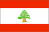
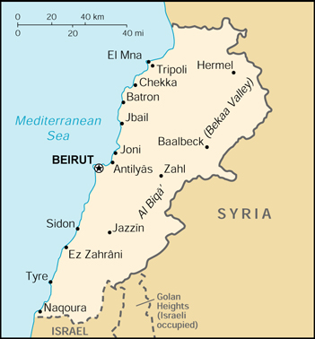

|
Lebanon |  |
| Introduction Geography People Government Economy Communications Transportation Military Transnational Issues | ||
|  | ||
| Lebanon | Introduction | Top of Page |
| Background: | Lebanon has made progress toward rebuilding its political institutions and regaining its national sovereignty since 1991 and the end of the devastating 16-year civil war. Under the Ta'if Accord - the blueprint for national reconciliation - the Lebanese have established a more equitable political system, particularly by giving Muslims a greater say in the political process while institutionalizing sectarian divisions in the government. Since the end of the war, the Lebanese have conducted several successful elections, most of the militias have been weakened or disbanded, and the Lebanese Armed Forces (LAF) have extended central government authority over about two-thirds of the country. Hizballah, the radical Shi'a party, retains its weapons. Syria maintains about 25,000 troops in Lebanon based mainly in Beirut, North Lebanon, and the Bekaa Valley. Syria's troop deployment was legitimized by the Arab League during Lebanon's civil war and in the Ta'if Accord. Damascus justifies its continued military presence in Lebanon by citing the continued weakness of the LAF, Beirut's requests, and the failure of the Lebanese Government to implement all of the constitutional reforms in the Ta'if Accord. Israel's withdrawal from its security zone in southern Lebanon in May of 2000, however, has emboldened some Lebanese Christians and Druze to demand that Syria withdraw its forces as well. |
| Lebanon | Geography | Top of Page |
| Location: | Middle East, bordering the Mediterranean Sea, between Israel and Syria |
| Geographic coordinates: | 33 50 N, 35 50 E |
| Map references: | Middle East |
| Area: |
total:
10,400 sq km
land: 10,230 sq km water: 170 sq km |
| Area - comparative: | about 0.7 times the size of Connecticut |
| Land boundaries: |
total:
454 km
border countries: Israel 79 km, Syria 375 km |
| Coastline: | 225 km |
| Maritime claims: | territorial sea: 12 NM |
| Climate: | Mediterranean; mild to cool, wet winters with hot, dry summers; Lebanon mountains experience heavy winter snows |
| Terrain: | narrow coastal plain; Al Biqa' (Bekaa Valley) separates Lebanon and Anti-Lebanon Mountains |
| Elevation extremes: |
lowest point:
Mediterranean Sea 0 m
highest point: Qurnat as Sawda' 3,088 m |
| Natural resources: | limestone, iron ore, salt, water-surplus state in a water-deficit region, arable land |
| Land use: |
arable land:
18%
permanent crops: 9% permanent pastures: 1% forests and woodland: 8% other: 64% (1996 est.) |
| Irrigated land: | 860 sq km (1993 est.) |
| Natural hazards: | dust storms, sandstorms |
| Environment - current issues: | deforestation; soil erosion; desertification; air pollution in Beirut from vehicular traffic and the burning of industrial wastes; pollution of coastal waters from raw sewage and oil spills |
| Environment - international agreements: |
party to:
Biodiversity, Climate Change, Desertification, Hazardous Wastes, Law of the Sea, Nuclear Test Ban, Ozone Layer Protection, Ship Pollution, Wetlands
signed, but not ratified: Environmental Modification, Marine Dumping, Marine Life Conservation |
| Geography - note: | Nahr al Litani only major river in Near East not crossing an international boundary; rugged terrain historically helped isolate, protect, and develop numerous factional groups based on religion, clan, and ethnicity |
| Lebanon | People | Top of Page |
| Population: | 3,627,774 (July 2001 est.) |
| Age structure: |
0-14 years:
27.57% (male 509,975; female 490,031)
15-64 years: 65.72% (male 1,136,995; female 1,247,184) 65 years and over: 6.71% (male 110,964; female 132,625) (2001 est.) |
| Population growth rate: | 1.38% (2001 est.) |
| Birth rate: | 20.16 births/1,000 population (2001 est.) |
| Death rate: | 6.39 deaths/1,000 population (2001 est.) |
| Net migration rate: | 0 migrant(s)/1,000 population (2001 est.) |
| Sex ratio: |
at birth:
1.05 male(s)/female
under 15 years: 1.04 male(s)/female 15-64 years: 0.91 male(s)/female 65 years and over: 0.84 male(s)/female total population: 0.94 male(s)/female (2001 est.) |
| Infant mortality rate: | 28.35 deaths/1,000 live births (2001 est.) |
| Life expectancy at birth: |
total population:
71.52 years
male: 69.13 years female: 74.03 years (2001 est.) |
| Total fertility rate: | 2.05 children born/woman (2001 est.) |
| HIV/AIDS - adult prevalence rate: | 0.09% (1999 est.) |
| HIV/AIDS - people living with HIV/AIDS: | NA |
| HIV/AIDS - deaths: | NA |
| Nationality: |
noun:
Lebanese (singular and plural)
adjective: Lebanese |
| Ethnic groups: | Arab 95%, Armenian 4%, other 1% |
| Religions: | Muslim 70% (including Shi'a, Sunni, Druze, Isma'ilite, Alawite or Nusayri), Christian 30% (including Orthodox Christian, Catholic, Protestant), Jewish NEGL% |
| Languages: | Arabic (official), French, English, Armenian |
| Literacy: |
definition:
age 15 and over can read and write
total population: 86.4% male: 90.8% female: 82.2% (1997 est.) |
| Lebanon | Government | Top of Page |
| Country name: |
conventional long form:
Lebanese Republic
conventional short form: Lebanon local long form: Al Jumhuriyah al Lubnaniyah local short form: Lubnan |
| Government type: | republic |
| Capital: | Beirut |
| Administrative divisions: | 5 governorates (mohafazat, singular - mohafazah); Beyrouth, Ech Chimal, Ej Jnoub, El Bekaa, Jabal Loubnane |
| Independence: | 22 November 1943 (from League of Nations mandate under French administration) |
| National holiday: | Independence Day, 22 November (1943) |
| Constitution: | 23 May 1926, amended a number of times, most recently Charter of Lebanese National Reconciliation (Taif Accord) of October 1989 |
| Legal system: | mixture of Ottoman law, canon law, Napoleonic code, and civil law; no judicial review of legislative acts; has not accepted compulsory ICJ jurisdiction |
| Suffrage: | 21 years of age; compulsory for all males; authorized for women at age 21 with elementary education |
| Executive branch: |
chief of state:
President Emile LAHUD (since 24 November 1998)
head of government: Prime Minister Rafiq HARIRI (since 23 October 2000); Deputy Prime Minister Issam FARES (since 23 October 2000) cabinet: Cabinet chosen by the prime minister in consultation with the president and members of the National Assembly; the current Cabinet was formed in 1998 elections: president elected by the National Assembly for a six-year term; election last held 15 October 1998 (next to be held NA 2004); prime minister and deputy prime minister appointed by the president in consultation with the National Assembly; by custom, the president is a Maronite Christian, the prime minister is a Sunni Muslim, and the speaker of the legislature is a Shi'a Muslim election results: Emile LAHUD elected president; National Assembly vote - 118 votes in favor, 0 against, 10 abstentions |
| Legislative branch: |
unicameral National Assembly or Majlis Alnuwab (Arabic) or Assemblee Nationale (French) (128 seats; members elected by popular vote on the basis of sectarian proportional representation to serve four-year terms)
elections: last held 27 August and 3 September 2000 (next to be held NA 2004) election results: percent of vote by party - Muslim 57% (of which Sunni 25%, Sh'ite 25%, Druze 6%, Alawite less than 1%), Christian 43% (of which Maronite 23%); seats by party - Muslim 64 (of which Sunni 27, Sh'ite 27, Druze 8, Alawite 2), Christian 64 (of which Maronite 34) |
| Judicial branch: | four Courts of Cassation (three courts for civil and commercial cases and one court for criminal cases); Constitutional Council (called for in Ta'if Accord - rules on constitutionality of laws); Supreme Council (hears charges against the president and prime minister as needed) |
| Political parties and leaders: | political party activity is organized along largely sectarian lines; numerous political groupings exist, consisting of individual political figures and followers motivated by religious, clan, and economic considerations |
| Political pressure groups and leaders: | NA |
| International organization participation: | ABEDA, ACCT, AFESD, AL, AMF, CCC, ESCWA, FAO, G-24, G-77, IAEA, IBRD, ICAO, ICC, ICFTU, ICRM, IDA, IDB, IFAD, IFC, IFRCS, ILO, IMF, IMO, Inmarsat, Intelsat, Interpol, IOC, ISO (correspondent), ITU, NAM, OAS (observer), OIC, PCA, UN, UNCTAD, UNESCO, UNHCR, UNIDO, UNRWA, UPU, WFTU, WHO, WIPO, WMO, WToO, WTrO (observer) |
| Diplomatic representation in the US: |
chief of mission:
Ambassador Dr. Farid ABBOUD
chancery: 2560 28th Street NW, Washington, DC 20008 telephone: [1] (202) 939-6300 FAX: [1] (202) 939-6324 consulate(s) general: Detroit, New York, and Los Angeles |
| Diplomatic representation from the US: |
chief of mission:
Ambassador David M. SATTERFIELD
embassy: Antelias, Beirut mailing address: P. O. Box 70-840, Antelias, Beirut; PSC 815, Box 2, FPO AE 09836-0002 telephone: [961] (4) 543600, 543600 FAX: [961] (4) 544136 |
| Flag description: | three horizontal bands of red (top), white (double width), and red with a green and brown cedar tree centered in the white band |
| Lebanon | Economy | Top of Page |
| Economy - overview: | The 1975-91 civil war seriously damaged Lebanon's economic infrastructure, cut national output by half, and all but ended Lebanon's position as a Middle Eastern entrepot and banking hub. Peace enabled the central government to restore control in Beirut, begin collecting taxes, and regain access to key port and government facilities. Economic recovery was helped by a financially sound banking system and resilient small- and medium-scale manufacturers. Family remittances, banking services, manufactured and farm exports, and international aid provided the main sources of foreign exchange. Lebanon's economy has made impressive gains since the launch in 1993 of "Horizon 2000," the government's $20 billion reconstruction program. Real GDP grew 8% in 1994, 7% in 1995, 4% per year in 1996 and 1997 but slowed to 2% in 1998, -1% in 1999, and 1% in 2000. Annual inflation fell during the course of the 1990s from more than 100% to 0%, and foreign exchange reserves jumped from $1.4 billion to more than $6 billion. Burgeoning capital inflows have generated foreign payments surpluses, and the Lebanese pound has remained very stable for the past two years. Lebanon has rebuilt much of its war-torn physical and financial infrastructure. Solidere, a $2-billion firm, has managed the reconstruction of Beirut's central business district; the stock market reopened in January 1996; and international banks and insurance companies are returning. The government nonetheless faces serious challenges in the economic arena. It has funded reconstruction by tapping foreign exchange reserves and by borrowing heavily - mostly from domestic banks. The newly re-installed HARIRI government's announced policies fail to address the ever-increasing budgetary deficits and national debt burden. The gap between rich and poor has widened in the 1990s, resulting in grassroots dissatisfaction over the skewed distribution of the reconstruction's benefits. |
| GDP: | purchasing power parity - $18.2 billion (2000 est.) |
| GDP - real growth rate: | 1% (2000 est.) |
| GDP - per capita: | purchasing power parity - $5,000 (2000 est.) |
| GDP - composition by sector: |
agriculture:
12%
industry: 27% services: 61% (1999 est.) |
| Population below poverty line: | 28% (1999 est.) |
| Household income or consumption by percentage share: |
lowest 10%:
NA%
highest 10%: NA% |
| Inflation rate (consumer prices): | 0% (2000 est.) |
| Labor force: |
1.3 million (1999 est.)
note: in addition, there are as many as 1 million foreign workers (1997 est.) |
| Labor force - by occupation: | services NA%, industry NA%, agriculture NA% |
| Unemployment rate: | 18% (1997 est.) |
| Budget: |
revenues:
$3.31 billion
expenditures: $5.55 billion, including capital expenditures of $NA (2000 est.) |
| Industries: | banking; food processing; jewelry; cement; textiles; mineral and chemical products; wood and furniture products; oil refining; metal fabricating |
| Industrial production growth rate: | NA% |
| Electricity - production: | 7.748 billion kWh (1999) |
| Electricity - production by source: |
fossil fuel:
91.29%
hydro: 8.71% nuclear: 0% other: 0% (1999) |
| Electricity - consumption: | 7.86 billion kWh (1999) |
| Electricity - exports: | 0 kWh (1999) |
| Electricity - imports: | 654 million kWh (1999) |
| Agriculture - products: | citrus, grapes, tomatoes, apples, vegetables, potatoes, olives, tobacco; sheep, goats |
| Exports: | $700 million (f.o.b., 2000 est.) |
| Exports - commodities: | foodstuffs and tobacco, textiles, chemicals, precious stones, metal and metal products, electrical equipment and products, jewelry, paper and paper products |
| Exports - partners: | UAE 9%, Saudi Arabia 8%, Syria 6%, US 6%, Kuwait 6%, France 5%, Belgium 5%, Jordan 4% (1999) |
| Imports: | $6.2 billion (f.o.b., 2000 est.) |
| Imports - commodities: | foodstuffs, machinery and transport equipment, consumer goods, chemicals, textiles, metals, fuels, agricultural foods |
| Imports - partners: | Italy 13%, France 11%, Germany 8%, US 7%, Switzerland 6%, Japan, UK, Syria (1999) |
| Debt - external: | $9.6 billion (2000 est.) |
| Economic aid - recipient: | $3.5 billion (pledges 1997-2001) |
| Currency: | Lebanese pound (LBP) |
| Currency code: | LBP |
| Exchange rates: | Lebanese pounds per US dollar - 1,507.5 (January 2001), 1,507.5 (2000), 1,507.8 (1999), 1,516.1 (1998), 1,539.5 (1997), 1,571.4 (1996) |
| Fiscal year: | calendar year |
| Lebanon | Communications | Top of Page |
| Telephones - main lines in use: | 700,000 (1999) |
| Telephones - mobile cellular: | 580,000 (1999) |
| Telephone system: |
general assessment:
telecommunications system severely damaged by civil war; rebuilding well underway
domestic: primarily microwave radio relay and cable international: satellite earth stations - 2 Intelsat (1 Indian Ocean and 1 Atlantic Ocean) (erratic operations); coaxial cable to Syria; microwave radio relay to Syria but inoperable beyond Syria to Jordan; 3 submarine coaxial cables |
| Radio broadcast stations: | AM 20, FM 22, shortwave 4 (1998) |
| Radios: | 2.85 million (1997) |
| Television broadcast stations: | 15 (plus 5 repeaters) (1995) |
| Televisions: | 1.18 million (1997) |
| Internet country code: | .lb |
| Internet Service Providers (ISPs): | 22 (2000) |
| Internet users: | 227,500 (2000) |
| Lebanon | Transportation | Top of Page |
| Railways: |
total:
399 km (mostly unusable because of damage in civil war)
standard gauge: 317 km 1.435-m narrow gauge: 82 km (1999) |
| Highways: |
total:
7,300 km
paved: 6,350 km unpaved: 950 km (1999 est.) |
| Waterways: | none |
| Pipelines: | crude oil 72 km (none in operation) |
| Ports and harbors: | Antilyas, Batroun, Beirut, Chekka, El Mina, Ez Zahrani, Jbail, Jounie, Naqoura, Sidon, Tripoli, Tyre |
| Merchant marine: |
total:
71 ships (1,000 GRT or over) totaling 379,705 GRT/592,672 DWT
ships by type: bulk 10, cargo 42, chemical tanker 1, combination bulk 1, combination ore/oil 1, container 4, liquefied gas 1, livestock carrier 5, refrigerated cargo 1, roll on/roll off 2, vehicle carrier 3 note: includes some foreign-owned ships registered here as a flag of convenience: Netherlands 1, Syria 1 (2000 est.) |
| Airports: | 8 (2000 est.) |
| Airports - with paved runways: |
total:
5
over 3,047 m: 1 2,438 to 3,047 m: 2 1,524 to 2,437 m: 1 under 914 m: 1 (2000 est.) |
| Airports - with unpaved runways: |
total:
3
914 to 1,523 m: 2 under 914 m: 1 (2000 est.) |
| Lebanon | Military | Top of Page |
| Military branches: | Lebanese Armed Forces (LAF; includes Army, Navy, and Air Force) |
| Military manpower - availability: | males age 15-49: 980,412 (2001 est.) |
| Military manpower - fit for military service: | males age 15-49: 605,332 (2001 est.) |
| Military expenditures - dollar figure: | $343 million (FY99/00) |
| Military expenditures - percent of GDP: | 4.8% (FY99/00) |
| Lebanon | Transnational Issues | Top of Page |
| Disputes - international: | Syrian troops in northern, central, and eastern Lebanon since October 1976; Lebanese government claims Shab'a Farms area of Israeli-occupied Golan Heights as a part of Lebanon from which Hizballah conducts cross-border attacks |
| Illicit drugs: | inconsequential producer of hashish; a Lebanese/Syrian eradication campaign started in the early 1990s has practically eliminated the opium and cannabis crops |
{kind=link}
{kind=link}